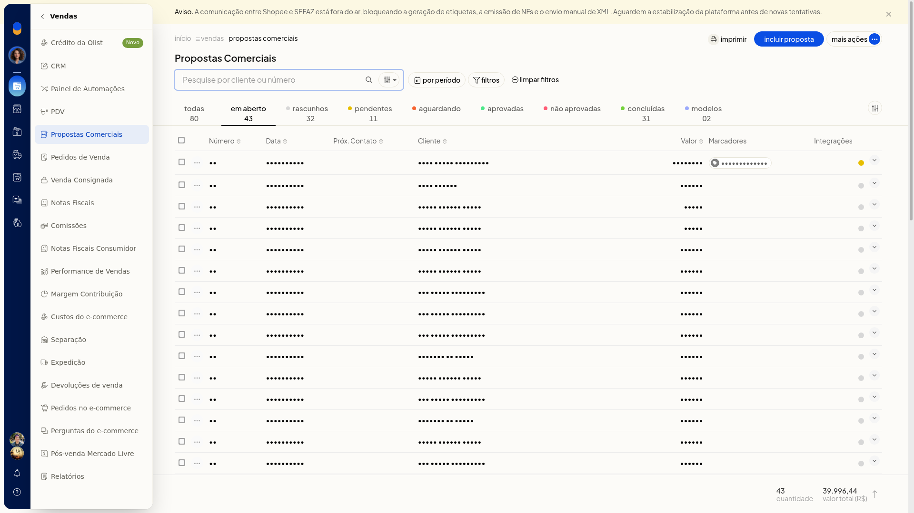

Exportar propostas comerciais para planilha
No ERP da Olist, você exporta para planilha as propostas comerciais que estão visíveis na lista. Antes de exportar, defina o conjunto pela situação, pela busca ou pelos filtros.
Importante
- A exportação usa as propostas visíveis na lista. Ajuste a aba, a busca e os filtros antes de abrir Mais ações.
Instruções
-
Acesse Vendas > Propostas Comerciais.
-
Deixe na lista o conjunto que deseja exportar. Use as abas Todas, Em aberto, Rascunhos, Pendentes, Aguardando, Aprovadas, Não aprovadas, Concluídas ou Modelos, a busca, o filtro por período ou os filtros.

-
Abra Mais ações.

-
Clique em Exportar propostas para planilha. A exportação das propostas visíveis na lista é iniciada.